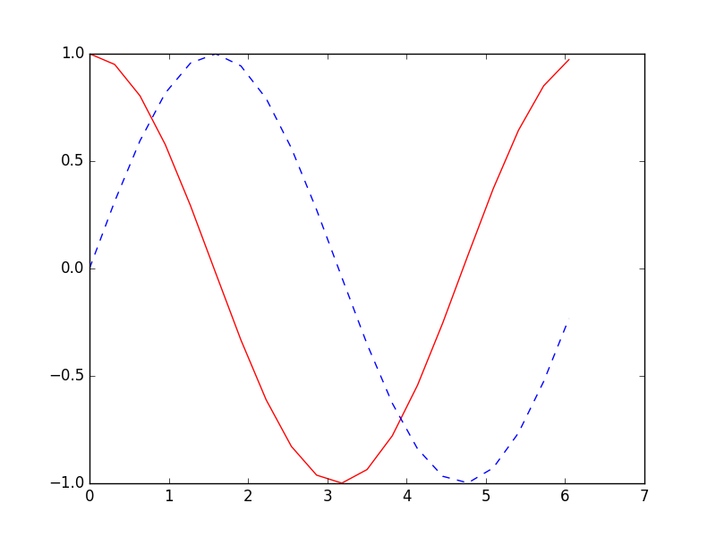

RNN LSTM (回归例子)
作者: 莫烦 编辑: 莫烦
学习资料:
- 相关代码
- 为 TF 2017 打造的新版可视化教学代码
- 机器学习-简介系列 什么是RNN
- 机器学习-简介系列 什么是LSTM RNN
- Tensorflow 的 bptt 形式理解
设置 RNN 的参数
这次我们会使用 RNN 来进行回归的训练 (Regression). 会继续使用到自己创建的 sin 曲线预测一条 cos 曲线. 接下来我们先确定 RNN 的各种参数(super-parameters):
import tensorflow as tf
import numpy as np
import matplotlib.pyplot as plt
BATCH_START = 0 # 建立 batch data 时候的 index
TIME_STEPS = 20 # backpropagation through time 的 time_steps
BATCH_SIZE = 50
INPUT_SIZE = 1 # sin 数据输入 size
OUTPUT_SIZE = 1 # cos 数据输出 size
CELL_SIZE = 10 # RNN 的 hidden unit size
LR = 0.006 # learning rate
数据生成
定义一个生成数据的 get_batch function:
def get_batch():
global BATCH_START, TIME_STEPS
# xs shape (50batch, 20steps)
xs = np.arange(BATCH_START, BATCH_START+TIME_STEPS*BATCH_SIZE).reshape((BATCH_SIZE, TIME_STEPS)) / (10*np.pi)
seq = np.sin(xs)
res = np.cos(xs)
BATCH_START += TIME_STEPS
# returned seq, res and xs: shape (batch, step, input)
return [seq[:, :, np.newaxis], res[:, :, np.newaxis], xs]

定义 LSTMRNN 的主体结构
使用一个 class 来定义这次的 LSTMRNN 会更加方便. 第一步定义 class 中的 __init__ 传入各种参数:
class LSTMRNN(object):
def __init__(self, n_steps, input_size, output_size, cell_size, batch_size):
self.n_steps = n_steps
self.input_size = input_size
self.output_size = output_size
self.cell_size = cell_size
self.batch_size = batch_size
with tf.name_scope('inputs'):
self.xs = tf.placeholder(tf.float32, [None, n_steps, input_size], name='xs')
self.ys = tf.placeholder(tf.float32, [None, n_steps, output_size], name='ys')
with tf.variable_scope('in_hidden'):
self.add_input_layer()
with tf.variable_scope('LSTM_cell'):
self.add_cell()
with tf.variable_scope('out_hidden'):
self.add_output_layer()
with tf.name_scope('cost'):
self.compute_cost()
with tf.name_scope('train'):
self.train_op = tf.train.AdamOptimizer(LR).minimize(self.cost)
设置 add_input_layer 功能, 添加 input_layer:
def add_input_layer(self,):
l_in_x = tf.reshape(self.xs, [-1, self.input_size], name='2_2D') # (batch*n_step, in_size)
# Ws (in_size, cell_size)
Ws_in = self._weight_variable([self.input_size, self.cell_size])
# bs (cell_size, )
bs_in = self._bias_variable([self.cell_size,])
# l_in_y = (batch * n_steps, cell_size)
with tf.name_scope('Wx_plus_b'):
l_in_y = tf.matmul(l_in_x, Ws_in) + bs_in
# reshape l_in_y ==> (batch, n_steps, cell_size)
self.l_in_y = tf.reshape(l_in_y, [-1, self.n_steps, self.cell_size], name='2_3D')
设置 add_cell 功能, 添加 cell, 注意这里的 self.cell_init_state, 因为我们在 training 的时候, 这个地方要特别说明.
def add_cell(self):
lstm_cell = tf.contrib.rnn.BasicLSTMCell(self.cell_size, forget_bias=1.0, state_is_tuple=True)
with tf.name_scope('initial_state'):
self.cell_init_state = lstm_cell.zero_state(self.batch_size, dtype=tf.float32)
self.cell_outputs, self.cell_final_state = tf.nn.dynamic_rnn(
lstm_cell, self.l_in_y, initial_state=self.cell_init_state, time_major=False)
设置 add_output_layer 功能, 添加 output_layer:
def add_output_layer(self):
# shape = (batch * steps, cell_size)
l_out_x = tf.reshape(self.cell_outputs, [-1, self.cell_size], name='2_2D')
Ws_out = self._weight_variable([self.cell_size, self.output_size])
bs_out = self._bias_variable([self.output_size, ])
# shape = (batch * steps, output_size)
with tf.name_scope('Wx_plus_b'):
self.pred = tf.matmul(l_out_x, Ws_out) + bs_out
添加 RNN 中剩下的部分:
def compute_cost(self):
losses = tf.contrib.legacy_seq2seq.sequence_loss_by_example(
[tf.reshape(self.pred, [-1], name='reshape_pred')],
[tf.reshape(self.ys, [-1], name='reshape_target')],
[tf.ones([self.batch_size * self.n_steps], dtype=tf.float32)],
average_across_timesteps=True,
softmax_loss_function=self.ms_error,
name='losses'
)
with tf.name_scope('average_cost'):
self.cost = tf.div(
tf.reduce_sum(losses, name='losses_sum'),
self.batch_size,
name='average_cost')
tf.summary.scalar('cost', self.cost)
def ms_error(self, y_target, y_pre):
return tf.square(tf.sub(y_target, y_pre))
def _weight_variable(self, shape, name='weights'):
initializer = tf.random_normal_initializer(mean=0., stddev=1.,)
return tf.get_variable(shape=shape, initializer=initializer, name=name)
def _bias_variable(self, shape, name='biases'):
initializer = tf.constant_initializer(0.1)
return tf.get_variable(name=name, shape=shape, initializer=initializer)
训练 LSTMRNN
if __name__ == '__main__':
# 搭建 LSTMRNN 模型
model = LSTMRNN(TIME_STEPS, INPUT_SIZE, OUTPUT_SIZE, CELL_SIZE, BATCH_SIZE)
sess = tf.Session()
# sess.run(tf.initialize_all_variables()) # tf 马上就要废弃这种写法
# 替换成下面的写法:
sess.run(tf.global_variables_initializer())
# 训练 200 次
for i in range(200):
seq, res, xs = get_batch() # 提取 batch data
if i == 0:
# 初始化 data
feed_dict = {
model.xs: seq,
model.ys: res,
}
else:
feed_dict = {
model.xs: seq,
model.ys: res,
model.cell_init_state: state # 保持 state 的连续性
}
# 训练
_, cost, state, pred = sess.run(
[model.train_op, model.cost, model.cell_final_state, model.pred],
feed_dict=feed_dict)
# 打印 cost 结果
if i % 20 == 0:
print('cost: ', round(cost, 4))
最后cost结果如下:
cost: 48.4813
cost: 9.9825
cost: 7.9988
cost: 5.8154
cost: 3.9268
cost: 2.4393
cost: 2.9643
cost: 0.4856
cost: 0.5175
cost: 0.7858
如果你觉得这篇文章或视频对你的学习很有帮助, 请你也分享它, 让它能再次帮助到更多的需要学习的人. 莫烦没有正式的经济来源, 如果你也想支持 莫烦Python 并看到更好的教学内容, 赞助他一点点, 作为鼓励他继续开源的动力.